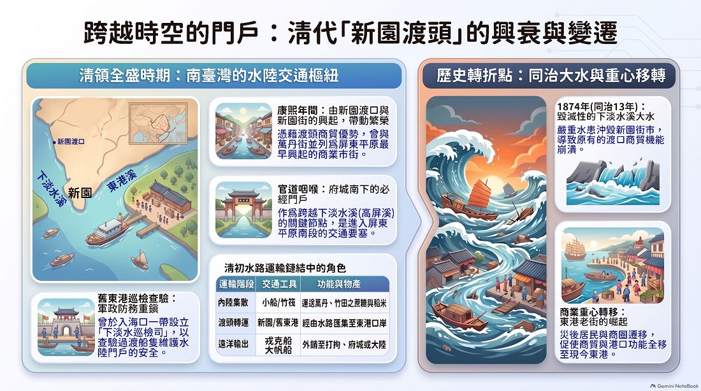
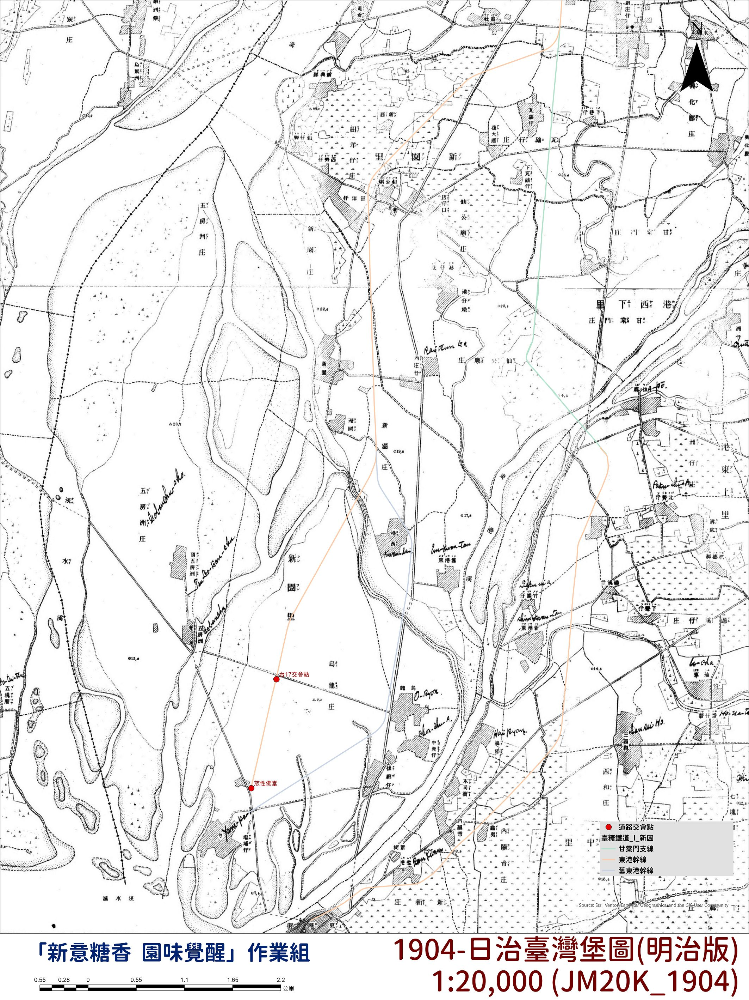
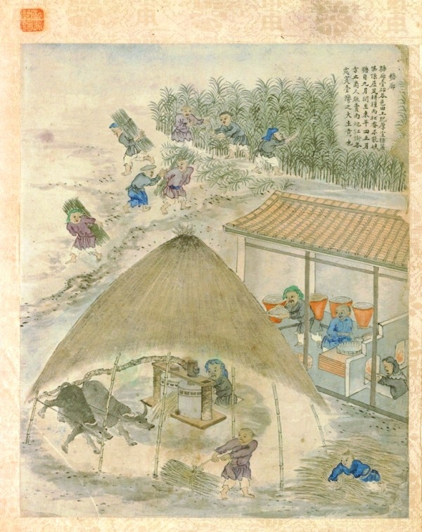
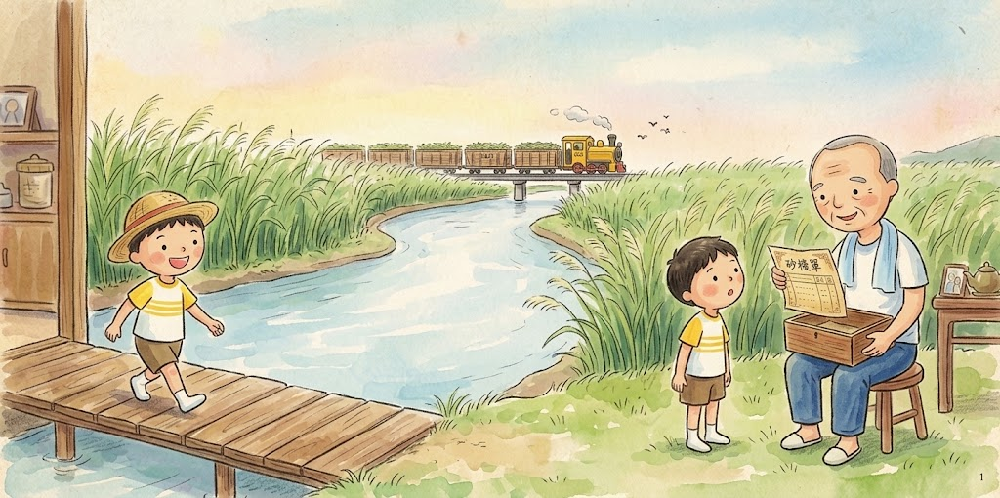

明清時期
新園時空圖譜
新園時空與水系聚落歷史圖資

仙隆宮
主祀神農大帝，據 廟中碑文與口傳，先民早至明代天啟年間、晚至崇禎時期抵達當地，於鯉魚山東方開墾，並祭祀隨身奉祀的五穀仙帝以求平安豐收。
新惠宮

主祀媽祖，創建於清乾隆二十年（1755年），是新園三十六庄的信仰中心與重要媽祖廟。
澄灜宮

主祀鹽府千歲，並陪祀糖府千歲、池府千歲等。其中「鹽」與「糖」千歲的稱呼由來與其生前官職或歷史淵源有關，是台灣少見以鹽、糖為神明尊號的王爺信仰。最早可追溯至清朝乾隆年，居民多簡稱為「王爺廟」。
防範臺灣成為海盜或反清基地，頒布限制移民政策（三禁：禁無照來台、禁攜帶家眷、禁粵民來臺）
日治體系 · 引入新式製糖
原料採取區域制 (1905)
總督府令頒布《製糖場取締規則》，臺灣總督府為扶植新式製糖會社、壟斷製糖原料。
四大會社體系
大日本・台灣・明治・鹽水港製糖株式會社
新園與糖鐵
糖廍經營與舊地名
地景空間帶有「廍」字的舊地名，在空間歷史上多與清代或日治早期的傳統糖業密切相關，反映出該地曾為「糖廍」的產業地景。
烏龍線、烏龍延長線、東港線
阿緱工場運糖專用線，用來載運甘蔗用 1908.03
東港線（營業線演進與更名）
客運線【行經】 阿緱、大湖莊、萬丹、新庄子、甘棠門、北勢仔、過溪子、內關帝、東港
【行經】 屏東、工場、太湖(大湖)、萬丹、新庄子、仙宮庄、港西、烏龍、鹽埔子
【行經】 屏東、工場、太湖(大湖)、萬丹、新庄子、仙公廟、新園
糖販原則上先暫存在糖廠，並代為投保火災險，核發「砂糖棧單」為憑據，蔗農需要用糖時再持單到糖廠領用。
戰後台糖 · 轉型與停閉
成立「台灣糖業公司」，隸屬「第二區分公司」
糖以外銷為主
國民政府遷來台
改為總廠制，更名為「屏東糖廠」
製糖生產成本漸高
開始利用蔗渣造紙廠 (1967) 紙漿廠電爐完成 (1976)，煙囪高60公尺
國際糖價從$1000美元/噸，降至$60美元/噸
停駛客運營業線-東港線
環保意識抬頭，紙漿廠停閉
屏東糖廠製糖工場停閉 ➔ 於同年底結束製糖業，改名為「屏東廠區」

1904-日治臺灣堡圖（明治版）1:20,000 (JM20K_1904)
道路交會點、臺糖鐵道_新園、甘棠門支線、東港幹線、舊東港幹線
補充資料

清代傳統糖廍製糖圖（《臺海采風圖》）
...
糖販原則上先暫存在糖廠，並代為投保火災險，核發「砂糖棧單」為憑據，蔗農需要用糖時再持單到糖廠領用。
世界大戰歷史進程
糖業鐵道專有名詞

【第一頁】阿公的秘密藏寶盒
新園老家回憶在屏東新園鄉的老家裡，陽光溫柔地灑在溪畔與綠意盎然的蔗田上。 阿明好奇地看著阿公從古樸的木盒裡，小心翼翼地拿出一張泛黃的舊紙張。 「阿公，這是你的藏寶圖嗎？」阿明睜大眼睛問道。 阿公笑著摸了摸阿明的頭說：「這可比寶藏還神奇喔！這是我們新園蔗農以前的『神奇卡片』——砂糖棧單。」